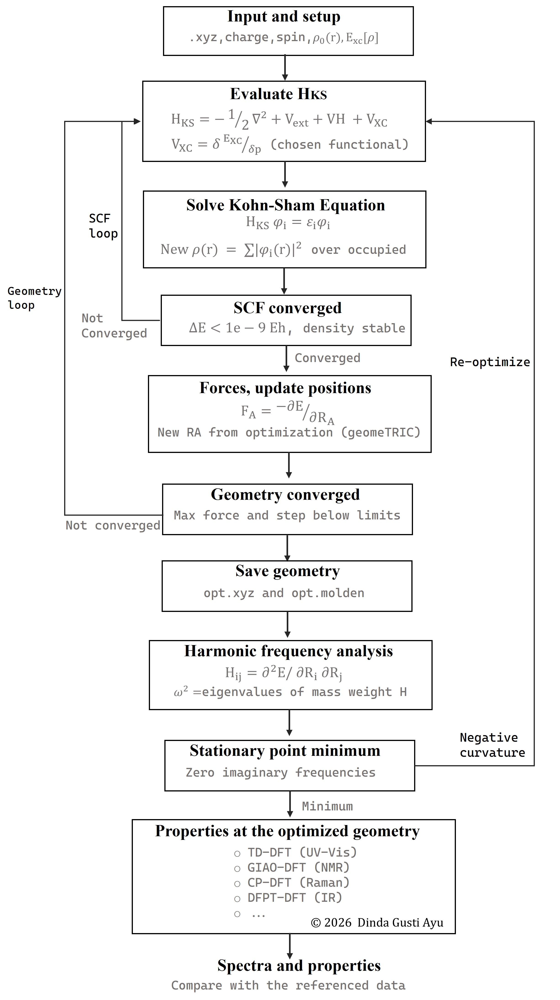

Density-functional theory
First-principles electronic structure calculation based on density-functional theory (DFT) has been widely applied to different fields of chemistry, physics, materials science, and other physical science. Essentially all properties (geometric structures, thermodynamics and kinetics of chemical reactions, electronic, magnetic, and optical properties of molecules and materials) can be calculated by DFT-based methods.
In spite of tremendous success of DFT, it is often risky to use DFT as a black box, we need a certain knowledge about theoritical foundations and its practical implementations to obtain reliable results. The main goal of this documentation is to give an overview on the foundations and practices of DFT that can hopefully provide some helpful guidelines for students or researchers to quickly get familiar with DFT calculations.
This page contains scripts for practical aspects of DFT implementations.
Workflow
The workflow is following the steps in this illustration.

